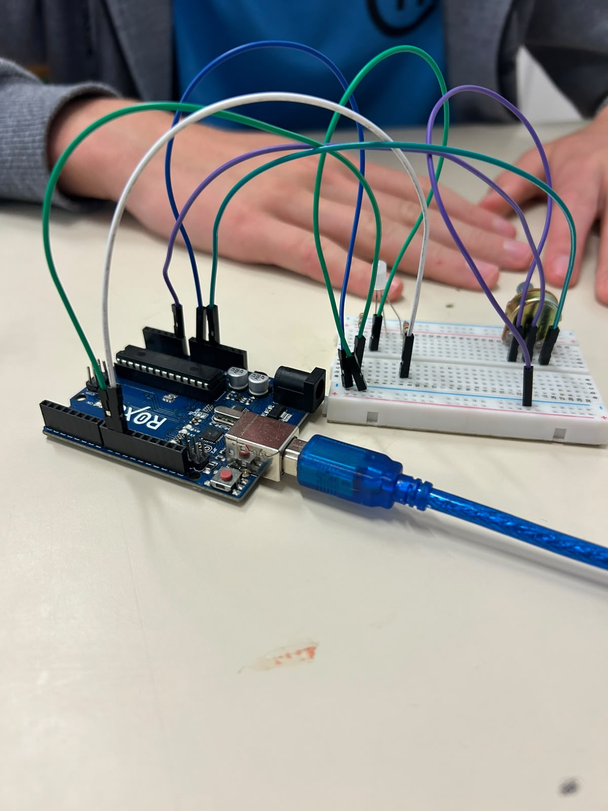

O que é?
LED RGB para sinalização
Este projeto foi desenvolvido utilizando a plataforma Arduino UNO com o objetivo de
demonstrar a aplicação de um LED RGB em um sistema de sinalização
luminosa, simulando o funcionamento de dispositivos de alerta presentes em equipamentos
eletrônicos, sistemas de segurança e sinalizadores de emergência. A proposta consiste em alternar
automaticamente entre as cores vermelha e azul, criando um efeito visual que chama
a atenção e representa um padrão de sinalização simples e eficiente.
O LED RGB é um componente eletrônico composto por três diodos emissores de luz nas
cores vermelho (Red), verde (Green) e azul (Blue). Por
meio do acionamento individual de cada um desses canais, é possível produzir uma ampla variedade de
cores. Neste projeto, entretanto, foram utilizados apenas os canais vermelho e azul, alternando seu
acionamento em intervalos de tempo previamente definidos para gerar um efeito de alerta visual
contínuo.
O controle do LED é realizado pelo Arduino UNO, responsável por executar o programa
e enviar os sinais elétricos necessários para acionar cada cor. A intensidade luminosa dos canais
pode ser controlada através da técnica de Modulação por Largura de Pulso (PWM – Pulse Width
Modulation), que permite variar a quantidade de energia fornecida ao LED sem alterar a
tensão de alimentação. Embora neste projeto as cores sejam utilizadas em intensidade fixa, o uso do
PWM possibilita futuras expansões, como efeitos de transição suave entre as cores
ou ajustes de brilho.
A programação foi desenvolvida na linguagem C/C++, utilizada na plataforma Arduino,
empregando estruturas de repetição e comandos de temporização para alternar continuamente entre os
estados do LED. O ciclo de funcionamento mantém a cor vermelha
acesa durante um determinado intervalo de tempo e, em seguida, realiza a troca para a cor azul, repetindo esse processo indefinidamente enquanto a placa
permanece energizada.
Além de demonstrar o controle de um LED RGB, este projeto permite compreender
conceitos fundamentais da eletrônica digital, da programação
embarcada e da utilização de saídas PWM em microcontroladores. A
atividade também evidencia como componentes simples podem ser empregados na criação de sistemas de
sinalização, servindo como base para aplicações mais complexas, como semáforos inteligentes,
indicadores de status, sistemas de monitoramento, alarmes e diversos outros projetos de
automação e robótica.
Materiais Utilizados
Arduino UNO R3
1 Unidade
Protoboard
1 Unidade
Jumpers
2 Unidades
LED RGB
1 Unidade
2 Resistores
220 Ω
Potenciômetro
220 Ω
Circuito no Tinkercad

A imagem acima apresenta a montagem do circuito desenvolvida no Tinkercad. Nela é possível visualizar a ligação entre o Arduino UNO, o LED, o resistor de 220 Ω e os jumpers utilizados para realizar o efeito Fade-In e Fade-Out utilizando PWM.
Acessar Projeto no TinkercadCódigo Fonte
Sinalização com LED RGB
/*
====================================================
Sistema de Alerta para Situações de Emergência
Arduino UNO
Vermelho piscando = PERIGO
Azul piscando = SAÍDA SEGURA
Potenciômetro controla a velocidade do piscar.
====================================================
*/
// ------------------------------
// Pinos do LED RGB
// ------------------------------
const int ledVermelho = 9;
const int ledAzul = 11;
// Potenciômetro
const int potenciometro = A0;
// Botão para trocar o modo
const int botao = 2;
// Guarda o modo atual
// false = vermelho
// true = azul
bool modo = false;
// Guarda o estado do LED
bool estadoLED = false;
// Tempo da última troca
unsigned long tempoAnterior = 0;
void setup()
{
// Configura os LEDs como saída
pinMode(ledVermelho, OUTPUT);
pinMode(ledAzul, OUTPUT);
// Configura botão
pinMode(botao, INPUT_PULLUP);
Serial.begin(9600);
}
void loop()
{
// ----------------------------
// Verifica se o botão foi apertado
// ----------------------------
if (digitalRead(botao) == LOW)
{
modo = !modo;
delay(300);
}
// ----------------------------
// Lê potenciômetro
// ----------------------------
int leitura = analogRead(potenciometro);
// Converte para tempo
int velocidade = map(leitura, 0, 1023, 1000, 100);
// ----------------------------
// Pisca LED
// ----------------------------
if (millis() - tempoAnterior >= velocidade)
{
tempoAnterior = millis();
estadoLED = !estadoLED;
if (modo == false)
{
// PERIGO
if (estadoLED)
{
analogWrite(ledVermelho, 255);
}
else
{
analogWrite(ledVermelho, 0);
}
analogWrite(ledAzul, 0);
}
else
{
// SAÍDA SEGURA
if (estadoLED)
{
analogWrite(ledAzul, 255);
}
else
{
analogWrite(ledAzul, 0);
}
analogWrite(ledVermelho, 0);
}
}
}
Vídeo Demonstrativo
Biblioteca de Imagens
